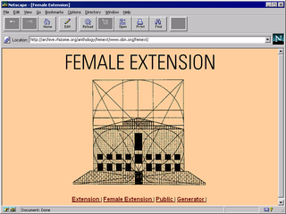

Artwork

- February 1997: Hamburger Kunsthalle announced that Extension, a competition for net art will be held as a virtual extension of the museum
- Theme of competition: Internet as material and Object
- Artists can upload up to 5 megabytes of data to a server for review by jury
- Response: Cornelia Sollfrank generated an estimate of about three hundred fake female artists, and remixed existing websites to create “data trash,”
- Each female artist has complete addresses with phone numbers, but also working email accounts on a number of different servers
- Method: Used a computer program that collected HTML-material with search engines on the World Wide Web and recombined this data automatically to create a net art generator
- Purpose: Raise questions about net art’s relationship to the institution
- Thinks that “Net art has nothing to do with museums and their operations, their juries and prizes, because it goes against the nature of Net art.
Net art is simply on the Net; so there's no reason for a museum or for a jury that decides what the best Net art is.”
- Result: 120 MegaByte of net art submitted with identities created from Germany, Netherlands, US, Slovenia and Austria
- Although two-thirds of the participants were women, all the winners were men